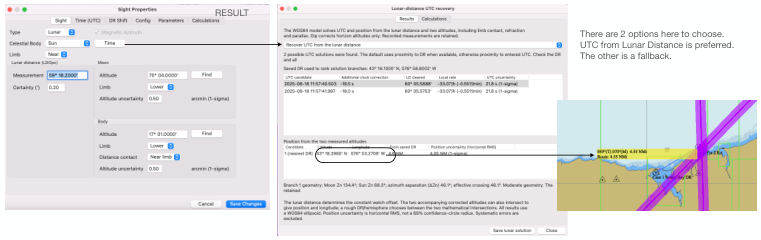

| Previous | Contents | Next |
Lunar distances · Page 51 of 70
7. Sensitivity Analysis (for time) The 59°18.8’ Lunar measurement wasn’t very accurate. To demonstrate through Sensitivity analysis, change the LD sight from 59°18.8’ to 59°18.0’. That’s almost an arc-min difference. Select the Lunar you just did, and use Duplicate. Then Edit the duplicate Lunar. Change the LD Measurement to 59°18.0’. It is an almost perfect LD measurement. Longitude error will be .1 arc min, despite the 2 body sight has insufficient spread for a fix.
Next change the LD Measurement to 59°18.2 (0.2’ error). A very good lunar sight, not perfect. Clock correction is -19s (the 2 estimates rounded). UTC Time is earlier by 19s. 19s is about 4.75 minutes of Longitude (15°/hr, .25’/sec) based on Sun time.
The following illustrates the Lunar measurement change from 18.8’ to 18.2’. And the “FIX” from Lunars dropped on the chart. And use of the Measure tool to determine distance from DR to Lunar’s Fix
 |
| Open illustration at full size |
| Previous | Contents | Next |